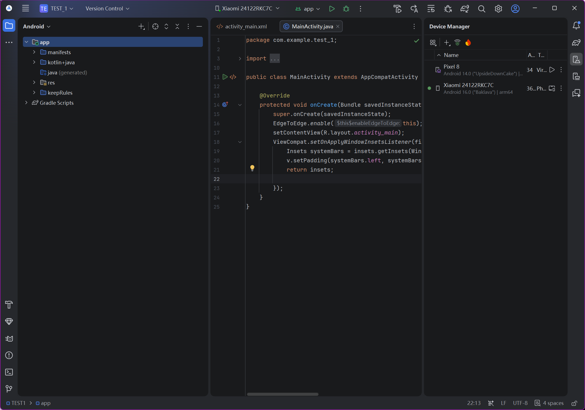
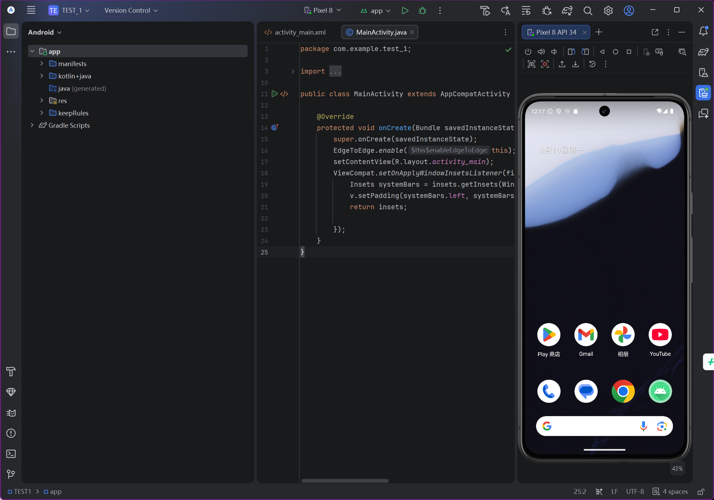
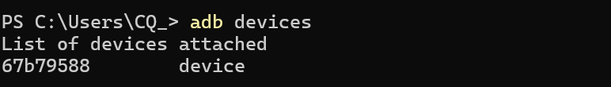
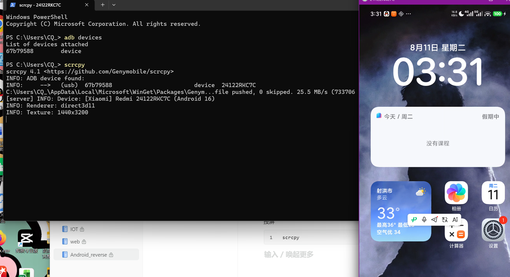

开发环境配置
1.开发工具：
Android Studio
https://developer.android.com/studio?hl=zh-cn
官网提供了一些使用教程 自己查询即可
2.了解开发基础：
构建工具---->java需要编译，java写的安卓程序也需要被编译成---->apk
-java：Maven构建 --> javaEE项目用的居多
-安卓：官方推荐使用gradle构建安卓项目
#gradle和maven都是java项目的构建工具，但他们有一些区别：
1.语法:Gradle使用Groovy语言进行编写，而Maven使用XML格式做的.
Groovy更加灵活易读，XML更加严谨易于重用
2.性能:Gradle比Maven更加高效快速，因为它使用了增量构建模式，只会重新构建被更改的模块，而Maven则需要重新构建整个项目
3.插件:Gradle的插件生态更加丰富和现代化，而Maven的件相对较为传统，此外，Gradle的插件可以非常容易地编写和定制，而Maven的描件相对繁琐。
4.维护:Maven有比较成熟的工具链和文档支持，而Gradle则相对较新，可能需要更多的自学
后续我们使用的就是gradle
# Groovy介绍[了解]
Groovy是一种基于JVM (Java虚拟机)的敏捷开发语言，它结合了Python,Ruby和Smalltalk的许多强大的特性，Groovy 代码能够与Java代码很好地结合，也能用于扩展现有代码
3.SDK配置及环境变量问题
在安装完Android Studio后 大概率会因为SDK的下载配置问题报错
两个解决方法 ：
Android SDK换源 or“健康”上网方式在Android Studio配置中下载
更倾向于换源（但是我目前没有换，问就是懒，换源可以省下很多麻烦事）
SDK下载后
#虚拟机文件
#移动接口
对这两个文件路径保存环境变量 挨着即可
调试环境
进入Android studio后新建项目 （目前只学了java）
选择Empty Views Activity（纯java开发）
进入开发界面会自动生成这个界面（先不管代码内容）
每次新建项目会重新下载Gradle（没换源记得出网创建）

调试项目
1.虚拟机调试
点击Android studio中的Devices Manager(版本不同位置不同)
新建虚拟机设备，自行了解适合自己的设备即可、

2.实机调试（推荐，实体机无需root）
使用实机打开开发者模式，打开USB调试，接入设备
使用之前环境配置的adb识别设备
adb devices
安装scrcpy
winget install --exact Genymobile.scrcpy输入
scrcpy